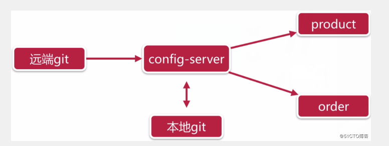
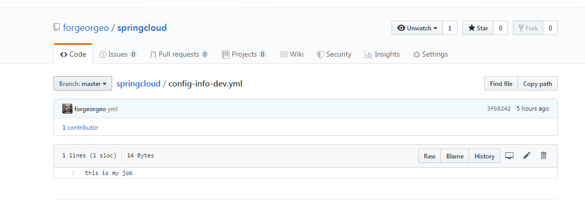
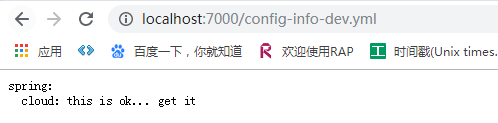
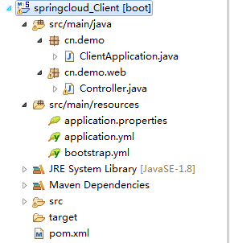
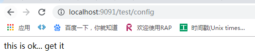

如果微服务架构中没有使用统一配置中心时，所存在的问题：
在SpringCloud中我们使用config组件来作为统一：

项目中父pom：
<!-- 管理springboot版本和依赖 -->
<parent>
<groupId>org.springframework.boot</groupId>
<artifactId>spring-boot-starter-parent</artifactId>
<version>2.0.3.RELEASE</version>
<relativePath/>
</parent>
<properties>
<project.build.sourceEncoding>UTF-8</project.build.sourceEncoding>
<project.reporting.outputEncoding>UTF-8</project.reporting.outputEncoding>
<java.version>1.8</java.version>
<!-- 主要spring-cloud的版本。Finchley.RELEASE适用于springboot2.0.3版本 -->
<spring-cloud.version>Finchley.RELEASE</spring-cloud.version>
</properties>
<!-- 管理springcloud版本 -->
<dependencyManagement>
<dependencies>
<dependency>
<groupId>org.springframework.cloud</groupId>
<artifactId>spring-cloud-dependencies</artifactId>
<version>${spring-cloud.version}</version>
<type>pom</type>
<scope>import</scope>
</dependency>
</dependencies>
</dependencyManagement>
<dependencies>
<dependency>
<groupId>org.springframework.boot</groupId>
<artifactId>spring-boot-starter-web</artifactId>
</dependency>
<dependency>
<groupId>org.springframework.cloud</groupId>
<artifactId>spring-cloud-config-server</artifactId>
</dependency>
</dependencies>在config服务添加application.yml文件：
server:
port: 7000
#服务名字
spring:
application:
name: config-server
cloud:
config:
server:
git:
#git 仓库的地址
uri: https://github.com/forgeorgeo/springcloud.git
#git 仓库的账号密码；不写也可以
username: 466786065@qq.com
password: java362430
#有下层目录的话 esarch-paths:
#加入注册中心，实现高可用
eureka:
client:
service-url:
defaultZone: http://localhost:8888/eureka/当然我们还要用git把代码文件提交到在github：

config启动类：
package cm.demo;
import org.springframework.boot.SpringApplication;
import org.springframework.boot.autoconfigure.SpringBootApplication;
import org.springframework.cloud.client.discovery.EnableDiscoveryClient;
import org.springframework.cloud.config.server.EnableConfigServer;
@SpringBootApplication
@EnableConfigServer
@EnableDiscoveryClient
public class ServiceConfigApplication {
public static void main(String[] args) {
SpringApplication.run(ServiceConfigApplication.class, args);
System.out.println("------启动成功!");
}
}此时可以访问：http://localhost:7000/config-info-dev.yml
结果：

二：客户端：

项目pom文件：
<parent>
<groupId>org.springframework.boot</groupId>
<artifactId>spring-boot-starter-parent</artifactId>
<version>2.0.3.RELEASE</version>
<relativePath/>
</parent>
<properties>
<project.build.sourceEncoding>UTF-8</project.build.sourceEncoding>
<project.reporting.outputEncoding>UTF-8</project.reporting.outputEncoding>
<java.version>1.8</java.version>
<spring-cloud.version>Finchley.RELEASE</spring-cloud.version>
</properties>
<dependencyManagement>
<dependencies>
<dependency>
<groupId>org.springframework.cloud</groupId>
<artifactId>spring-cloud-dependencies</artifactId>
<version>${spring-cloud.version}</version>
<type>pom</type>
<scope>import</scope>
</dependency>
</dependencies>
</dependencyManagement>
<dependencies>
<dependency>
<groupId>org.springframework.cloud</groupId>
<artifactId>spring-cloud-config-client</artifactId>
</dependency>
<!--Spring Boot Actuator，感应服务端变化-->
<dependency>
<groupId>org.springframework.boot</groupId>
<artifactId>spring-boot-starter-actuator</artifactId>
</dependency>
<dependency>
<groupId>org.springframework.boot</groupId>
<artifactId>spring-boot-starter-web</artifactId>
</dependency>
<dependency>
<groupId>org.springframework.boot</groupId>
<artifactId>spring-boot-starter-test</artifactId>
<scope>test</scope>
</dependency>
</dependencies>创建bootstrap.yml 文件：
spring:
cloud:
config:
label: master
uri: http://localhost:7000 #服务端路径
name: config-info #git上文件名（如文件：config-info-dev.yml）
profile: dev #文件后缀（开发，测试版本）
创建application.yml 文件：
server:
port: 9091 #客户端端口
spring:
application:
name: user-service #客户端服务名这里的两个配置文件中bootstrap 加载顺序在application 之前。
到这里 springcloud Config访问github配置文件最简单的配置就完成了，下面我们在 config客户端写一个接口测试一下
package cn.demo.web;
import org.springframework.beans.factory.annotation.Value;
import org.springframework.cloud.context.config.annotation.RefreshScope;
import org.springframework.web.bind.annotation.GetMapping;
import org.springframework.web.bind.annotation.RequestMapping;
import org.springframework.web.bind.annotation.RequestParam;
import org.springframework.web.bind.annotation.RestController;
@RestController
@RefreshScope
public class Controller {
@Value("${spring.cloud}")
private String config;
@GetMapping("/test/config")
public String test() {
return config;
}
}先启动 config服务，在启动 config客户端，访问http://localhost:9091/test/config

但是这样就好了吗？虽然服务没有重启，但是我们要一个服务一个服务的发送post请求，我们能受的了吗？这比之前的没配置中心好多了，那么我们如何继续避免挨个挨个的向服务发送Post请求来告知服务，你的配置信息改变了，需要及时修改内存中的配置信息。
这时候我们就不要忘记消息队列的发布订阅模型。让所有为服务来订阅这个事件，当这个事件发生改变了，就可以通知所有微服务去更新它们的内存中的配置信息。这时Bus消息总线就能解决，这留到下一篇随笔讲解。
配置规则详解
还记得最开始我们建的那几个测试文件的命名规则么？
这里的application可以自定义为其它的名称，这里可以用应用的名称，即应用名，后边的dev、stable、prod这些都可以视为一个应用下多个不同的配置文件，可以当做环境名，以下均用环境名代称。
Config支持我们使用的请求的参数规则为：
注意：
- 第一个规则的分支名是可以省略的，默认是master分支
- 无论你的配置文件是properties，还是yml，只要是应用名+环境名能匹配到这个配置文件，那么就能取到
- 如果是想直接定位到没有写环境名的默认配置，那么就可以使用default去匹配没有环境名的配置文件
- 使用第一个规则会匹配到默认配置
- 如果直接使用应用名来匹配，会出现404错误，此时可以加上分支名匹配到默认配置文件
- 如果配置文件的命名很由多个-分隔，此时直接使用这个文件名去匹配的话，会出现直接将内容以源配置文件内容直接返回，内容前可能会有默认配置文件的内容（已测试）